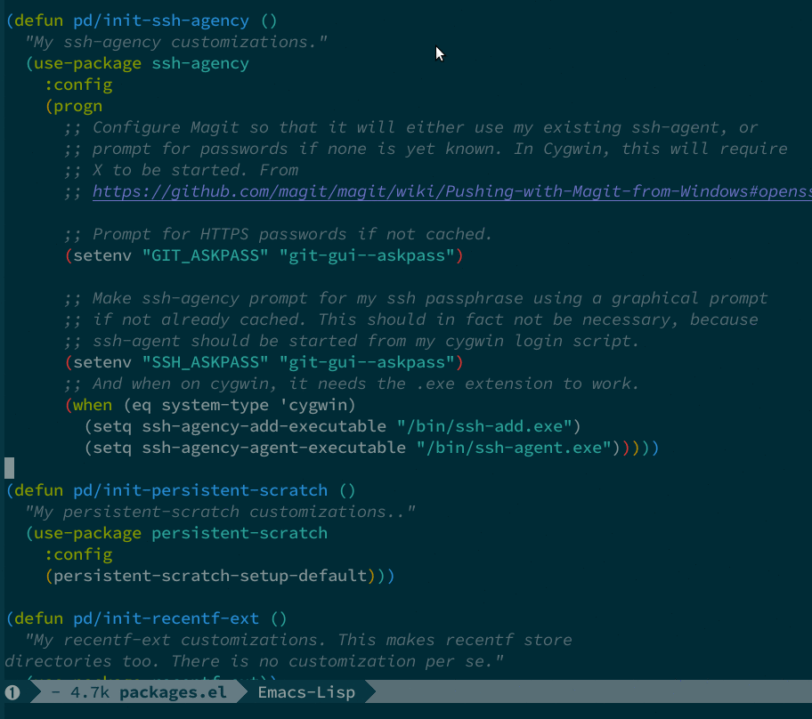
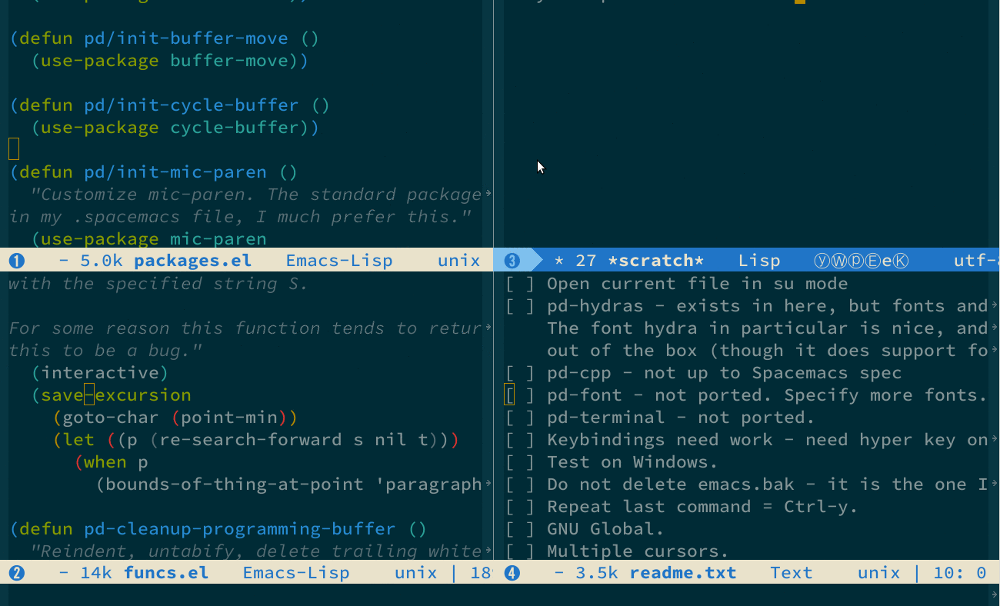
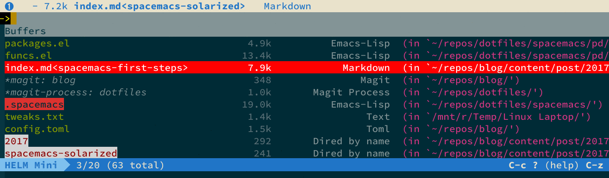
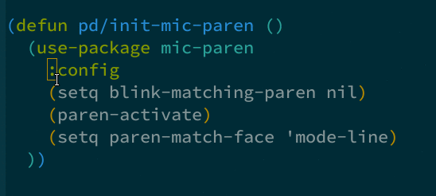

Solarized, tredux
There are at least 3 different Solarized theme packages for Emacs:
Steve’s is based on Greg’s. Of the three, I have always used Greg’s in the past, finding it to have a comprehensive set of faces. So naturally I wanted to get it working in Spacemacs. That was a bit trickier than expected, because it uses a non-standard loading mechanism, however, I found an issue on Github that explained how to do it. I reproduce it here.
Basic Steps
The package you want is called color-theme-solarized. But you will get a load
error if you try and add it to the dotspacemacs-themes variable in your
.spacemacs. Instead, add it here:
dotspacemacs-additional-packages '(color-theme-solarized)
Then, in your dotspacemacs/user-config function, you need to manually load the
theme:
(set-terminal-parameter nil 'background-mode 'dark)
(set-frame-parameter nil 'background-mode 'dark)
(spacemacs/load-theme 'solarized)
Thanks to Christoph Paulik who posted this solution at https://github.com/syl20bnr/spacemacs/issues/1269#issuecomment-198309213
Things look pretty good out of the box, you even get rainbow delimiters:

Tweaking the modeline
I find the provided modeline to be a bit bland, I prefer something little bolder and that functions as a sort of “on/off” modeline where the modeline for inactive buffers is the inverse of the active one. To accomplish this I adjusted some faces after the theme has loaded. Spacemacs has a layer called theming which helps with this.
First ensure you bring in the theming package in the usual way, by adding it to your
dotspacemacs-configuration-layers variable in the .spacemacs file. Then add
the following code just before the lines above that call spacemacs/load-theme.
;; Get color-theme-solarized working. It is specified as an additional package
;; above. First we setup some theme modifications - we must do this *before*
;; we load the theme. Note that the color-theme-solarized package appears in
;; the list of themes as plain old 'solarized'.
(setq theming-modifications
'((solarized
;; Provide a sort of "on-off" modeline whereby the current buffer has a nice
;; bright blue background, and all the others are in cream.
;; TODO: Change to use variables here. However, got error:
;; (Spacemacs) Error in dotspacemacs/user-config: Wrong type argument: stringp, pd-blue
(mode-line :foreground "#e9e2cb" :background "#2075c7" :inverse-video nil)
(powerline-active1 :foreground "#e9e2cb" :background "#2075c7" :inverse-video nil)
(powerline-active2 :foreground "#e9e2cb" :background "#2075c7" :inverse-video nil)
(mode-line-inactive :foreground "#2075c7" :background "#e9e2cb" :inverse-video nil)
(powerline-inactive1 :foreground "#2075c7" :background "#e9e2cb" :inverse-video nil)
(powerline-inactive2 :foreground "#2075c7" :background "#e9e2cb" :inverse-video nil)
;; Make a really prominent helm selection line.
(helm-selection :foreground "white" :background "red" :inverse-video nil)
;; See comment above about dotspacemacs-colorize-cursor-according-to-state.
(cursor :background "#b58900")
)))
(set-terminal-parameter nil 'background-mode 'dark)
(set-frame-parameter nil 'background-mode 'dark)
(spacemacs/load-theme 'solarized)
Now, these modifications will be applied after solarized is loaded. #e9e2cb is
the creamy-white color from solarized, and #2075c7 is the blue colour. The
final result looks like this:

You can take this opportunity to customize other faces too. I changed the cursor
to the yellow color from solarized, but to get this to work you must set the
variable dotspacemacs-colorize-cursor-according-to-state to nil, otherwise
Spacemacs will change the cursor back to what it thinks it should be! That took
a while to figure out, it was an unrelated posting on
the Gitter Channel that tipped me off to
that one.
Oh, and my helm selection line looks like this - I like there to be no ambiguity about what I am selecting!

Tweaking parentheses highlighting
My last theming tweak was to adjust the parentheses highlighting to something more to my taste. As I noted above, rainbow delimiters are on out of the box, but dynamic highlighting by highlight-parentheses is also enabled. I think smart-parens also gets in on the act.
Anyway, I found the light green highlighting on top of rainbow delimiters to be a little too much…it made it harder to see the matching parentheses.
I like to use a package called mic-paren to do my highlighting. I found it on the Emacs Wiki but it is available on MELPA.
To setup mic-paren, first let’s ban highlight-parentheses by adding it to the variable
dotspacemacs-excluded-packages in the .spacemacs file:
dotspacemacs-excluded-packages '(highlight-parentheses)
Finally, in
my pd layer’s
packages.el file I added mic-paren to the list of packages I needed, and
initialized it as follows:
(defun pd/init-mic-paren ()
"Customize mic-paren. The standard package highlight-parentheses is banned in my
.spacemacs file, I much prefer this."
(use-package mic-paren
:config
(setq blink-matching-paren nil)
(paren-activate)
(setq paren-match-face 'mode-line)
))
You can pick any face you want, I like to use the same as my active modeline.
I also needed to stop smart-parens from interfering by adding these two lines to my
dotspacemacs/user-config function:
;; Turn this off to stop it interfering with mic-paren.
(set-face-attribute 'sp-show-pair-match-face nil :foreground 'unspecified :background 'unspecified)
(set-face-attribute 'sp-show-pair-mismatch-face nil :foreground 'unspecified :background 'unspecified)
The final result looks like this:
